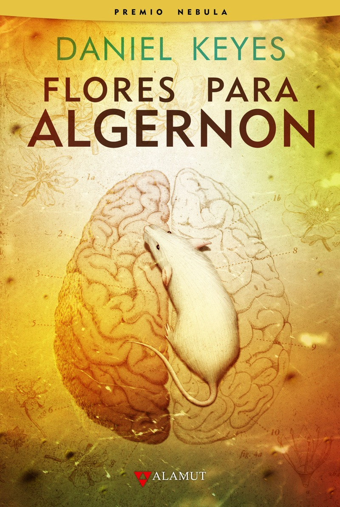

Relato de 1959 y novela de 1966. Premio Nebula 1966.
todostuslibros.com · Flores para Algernon2Cuanto más inteligente te vuelvas, más problemas tendrás, Charlie. Tu crecimiento mental va a superar tu crecimiento emocional. Y creo que, a medida que progreses, descubrirás muchas cosas de las que querrás hablarme. Quiero simplemente que recuerdes que es aquí donde tienes que venir cuando necesites ayuda.
10Ahora tienes un cerebro formidable, una inteligencia que no puede ser calculada, has absorbido ya más conocimientos de los que pueden reunir la mayoría de la gente a lo largo de toda su vida. Pero estás… como falto de equilibrio. Sabes cosas. Ves cosas. Pero aún no has alcanzado la comprensión o, mejor, la tolerancia. Les tratas de impostores, pero ¿cuándo has oído a alguno de ellos pretender ser perfecto o sobrehumano? Son gente vulgar. Tú eres el genio.
15doy cuenta de que los problemas emocionales no pueden ser resueltos como los problemas intelectuales. Esto es lo que descubrí la otra noche acerca de mí mismo. Me dije que erraba como un alma en pena, y después vi que era un alma en pena.
8Strauss ha llamado de nuevo mi atención sobre la necesidad de hablar y escribir sencilla y claramente a fin de que todo el mundo pueda comprenderme. Me ha recordado que a veces el lenguaje es un obstáculo en lugar de un medio de comunicación. Es irónico que me encuentre así al otro lado de la barrera intelectual.
17La inteligencia es uno de los mayores dones del hombre. Pero demasiado a menudo la búsqueda del saber oculta la búsqueda del amor. Ésta es otra de las cosas que he descubierto por mí mismo recientemente. Se la ofrezco en forma de hipótesis. »La inteligencia sin la capacidad de dar y recibir un afecto conduce al derrumbe mental y moral, a la neurosis e incluso a la psicosis. Y digo que la mente absorbida en un interés egoísta tomado como un fin en sí mismo, con exclusión de toda relación humana, no puede conducir más que a la violencia y al dolor.
19la inteligencia por sí sola no significa gran cosa. Aquí, en su Universidad, la inteligencia, la educación, el saber, se han convertido en grandes ídolos. Pero ahora sé que hay un detalle que han olvidado: la inteligencia y la educación que no han sido templadas en el afecto humano no valen gran cosa
6Una de las cosas que más me confunde es no saber nunca, cuando alguna reminiscencia surge de mi pasado, si todo ocurrió realmente de ese modo, o es tan sólo la manera en que me pareció en aquel tiempo que ocurría, o si todo es una invención mía. Soy como un hombre que ha permanecido medio dormido toda su vida y que, antes de despertarse, intenta descubrir cómo era antes. Todo aparece extrañamente confuso y como al ralentí.
12Pero, incluso mientras intento arrojarla de mi mente, los recuerdos continúan fluyendo del pasado y contaminando el presente. Otro
16para descubrir quién soy realmente, el sentido de toda mi existencia, tengo que conocer las posibilidades de mi futuro tanto como de mi pasado, saber dónde voy tanto como de dónde he venido. Aunque todos sepamos que al final del laberinto se encuentra la muerte (y hubo un tiempo en que yo no lo sabía… No hace tanto, el adolescente que había en mí pensaba que la muerte sólo podía ocurrirles a los otros), veo ahora que el camino que he elegido en este laberinto me ha hecho lo que soy. No soy solamente un ser, sino también una manera de ser —una entre muchas otras—, y el tomar consciencia de los corredores que he seguido y de los que me falta recorrer me ayudará a comprender en qué me voy convirtiendo.
14la pueril ingenuidad, la poca inteligencia de una mente que, metida en una habitación oscura, miraba por el agujero de la cerradura la cegadora luz del exterior.
20Quién puede decir que mi luz vale más que tu oscuridad? ¿Quién puede decir que la muerte es mejor que tu oscuridad? ¿Quién soy yo para permitirme decirlo?…
24las palabras de Platón se ríen de mí desde las sombras, en la cornisa más allá de las llamas: «… los hombres de las cavernas dirán de él que ha ascendido y ha vuelto a caer sin sus ojos…».
7Mi inteligencia ha cavado como un foso entre yo y todos aquellos a quienes conocía y quería,
9No eran más que hombres vulgares trabajando a ciegas, pretendiendo poder hacer la luz en las tinieblas. ¿Por qué miente todo el mundo? Nadie que conozca es lo que parece ser.
1me explicó lo importante que era para mí el aprender a conocerme de modo que comprendiera mis problemas.
3usé el método de asociación libre de ideas que me pidió que empleara el doctor Strauss cuando recordara mis sueños
4Mi cólera era una sensación embriagadora y no quería renunciar a ella. Estaba dispuesto a pelearme.
5Ahora comprendo que una de las grandes razones de ir a la escuela e instruirse es aprender que las cosas en las cuales uno ha creído toda su vida no son realmente ciertas, y que nada es como parece ser.
11conturbado
13el éxito parece ser suficiente recompensa.
18Todos creen que me mato trabajando a este ritmo, pero lo que no comprenden es que vivo en la cúspide de una lucidez y una belleza cuya existencia ignoraba hasta ahora. Cada parte de mí mismo está en perfecta armonía con este trabajo.
21estudio sobre la estructura y el funcionamiento de la inteligencia incrementada», que puede usted publicar si lo considera oportuno.
22Hubiera querido poder decirle que, como la dinastía de Atreo o Cadmo, pagábamos por los pecados de nuestros antepasados, cumpliendo un antiguo oráculo griego. Pero no tenía explicación ni para ella ni para mí.
23Tendría que cambiar este diván por un sillón de barbero. Y cuando quisiera una asociación libre de ideas no tendría que hacer más que echar para atrás el respaldo como hace el barbero para enjabonarle a uno la cara; cuando hubieran pasado los cincuenta minutos, podría volver a echar hacia adelante el respaldo y ofrecerle un espejo para que pudiera ver qué aspecto exterior tiene una vez afeitado su ego. No dijo nada y, pese a que me sentía avergonzado del modo como le hablaba, no pude detenerme. —Entonces, su paciente podría venir a cada sesión y decir: «Quíteme un poco de ansiedad, por favor», o «no me corte demasiado el ego, sólo arréglemelo», o incluso pedir un poco de champú al huevo… perdón, quise decir champú al ego. ¡Ajá! ¿Ha anotado este lapsus, doctor? Apúntelo.
25lo importante que era el amor físico, cuán necesario nos era estar uno en brazos del otro, dar y recibir.
Precioso, emotivo y disruptivo. Así lo nombras tú, y los subrayados sostienen las tres dimensiones. Lo precioso está en esa «cúspide de una lucidez y una belleza» cuya existencia Charlie ignoraba (nº 18), y en la cornisa de Platón, donde se pregunta quién puede decir que su luz vale más que la oscuridad del otro (nº 20, 24). Lo emotivo, en la cólera que no se quiere soltar (nº 4), el alma en pena (nº 15), el foso con quienes quería (nº 7) y la necesidad de dar y recibir afecto, también el físico (nº 17, 25). Lo disruptivo no es solo la tesis: es el propio formato —los informes de progreso, cuya lengua cambia con la mente de Charlie—, la ética de experimentar con una persona como se experimentó con un ratón (nº 9, 10), y la pregunta de qué vale la inteligencia si no está templada en el afecto humano (nº 19).
La mente adelanta al juicio. El aviso llega pronto: «Tu crecimiento mental va a superar tu crecimiento emocional» (nº 2). Más adelante te lo devuelven como diagnóstico: sabes y ves, pero «aún no has alcanzado la comprensión o, mejor, la tolerancia» (nº 10). Tú mismo lo cierras: los problemas emocionales «no pueden ser resueltos como los problemas intelectuales» (nº 15). En medio, esa palabra suelta, «conturbado» (nº 11), como si el estado no necesitara una frase.
El foso y la barrera. La inteligencia «ha cavado como un foso» entre Charlie y quienes quería (nº 7). Strauss le pide hablar y escribir «sencilla y claramente»: a veces el lenguaje es un obstáculo, y es irónico hallarse «al otro lado de la barrera intelectual» (nº 8). Al otro lado, los que prometían hacer luz no eran más que «hombres vulgares trabajando a ciegas» (nº 9), y la escuela sirve para aprender que «nada es como parece ser» (nº 5).
Memoria, laberinto, caverna. Una reminiscencia no garantiza lo ocurrido: pudo ser así, pudo parecerlo, pudo ser una invención (nº 6); los recuerdos «contaminan el presente» y el pasaje se corta en «Otro» (nº 12). Para saber quién es, Charlie mira el laberinto: no es solo un ser, sino «una manera de ser» (nº 16). Cierra Platón, desde la cornisa: los de la caverna dirán que «ha ascendido y ha vuelto a caer sin sus ojos» (nº 24).
Cómo conecta con tus intereses.
Preguntas para seguir leyendo
Relato de 1959 y novela de 1966. Premio Nebula 1966.
todostuslibros.com · Flores para AlgernonLa ficha pública está en Todostuslibros (catálogo CEGAL). Alamut es el sello editorial. Serie Fantástica n.º 86.